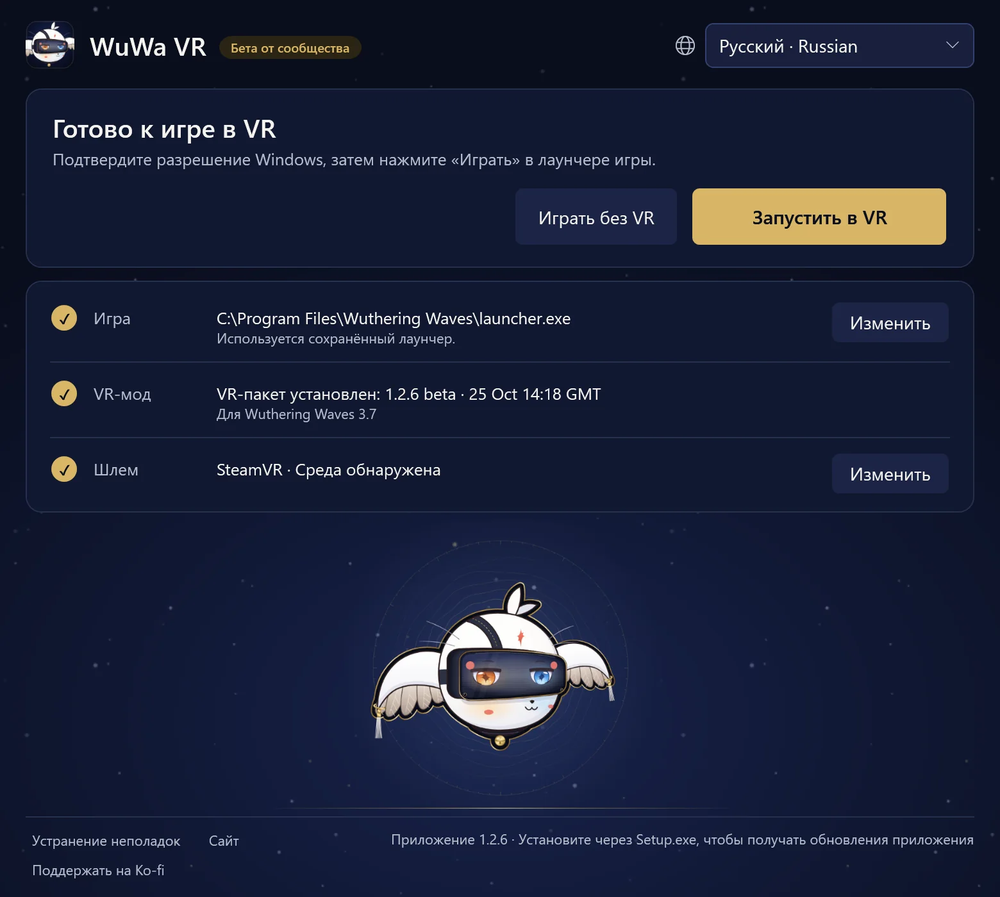

Руководство1.2.6 руководство игрока · Wuthering Waves 3.7 · Windows PCVR
Играйте в WuWa в VR
Установите WuWa-VR-Setup.exe, затем откройте ярлык WuWa VR. Отдельная установка Python не требуется. Для первой установки VR-пакета нужен интернет; небольшой загружаемый Setup содержит приложение лаунчера.
Установка и запуск
Лаунчер умещается на одном экране. Заголовок подсказывает следующий шаг; ниже — Запустить в VR, Играть без VR и три строки: Игра, VR-мод и Шлем. Ваш выбор запоминается, так что в следующий раз можно сразу нажать Запустить в VR.
- Игра показывает найденную копию из Steam или официального лаунчера Kuro. Чтобы выбрать другую, нажмите Изменить; для Steam выберите
Wuthering Waves.exe, а не внутренний исполняемый файл Shipping. Epic пока не поддерживается. - VR-мод показывает установленный пакет и версию игры, для которой он сделан. В первый раз прочитайте предупреждение о риске для аккаунта и выберите Установить VR. Пакет проверяется перед установкой, а установка не запускает игру.
- Шлем показывает используемую среду OpenXR, поэтому сначала запустите программу шлема. Изменить открывает Использовать шлем и Использовать встроенный симулятор — предпросмотр на рабочем столе. Переключение может запросить разрешение Windows и требует закрыть игру и её инжектор; открытие, установка или обновление лаунчера никогда не переключают среду сами.
Приложение лаунчера — это данное окно на рабочем столе. VR-пакет — это мод и его инструменты. Обновление одного не обновляет автоматически другое.


Нажмите Запустить в VR. По ходу запуска загораются четыре шага: Разрешение (выберите «Да» в окне Windows), Нажать «Играть» (в лаунчере Kuro; Steam запускает игру сам), Запуск VR (обычно меньше минуты) и В VR.
В VR лаунчер пишет Это окно можно закрыть. VR продолжит работать. Если запуск VR идёт дольше обычного, он сообщит об этом и покажет подробности. Перестать ждать отменяет ожидание, не закрывая игру.
Играть без VR запускает ту же копию игры как обычно, без мода.
Повседневное управление
Обычный способ игры — Xbox / XInput. L3 / R3 — нажатие левого / правого стика. Не уверены? Удерживайте L3 или LT + RT полсекунды: под вашим взглядом появится карточка, которая показывает, что делает каждая кнопка, и подсвечивает её при нажатии. Отпускайте управление между сочетаниями. В таблицах ниже — все сочетания, сгруппированные как на карточках.

- LTОкно портала
- LBРежим HUD / мыши
- ViewОт первого лица
- Крестовина ↓Первое лицо: полная анимация
- RTДиорама (10×)
- RBКамера игры / фиксированная
- MenuСохранять эту карточку открытой
- Y/XКамера вверх / вниз
- BПоказать / скрыть интерфейс
- AЦентрировать вид
- R3Меню WuWa VR
Жесты
- R3×2Свободная камера
- L3×2Скриншот
- LT+RT→R3Клик: полный VR / стереоэкран
- LT+RT→R30.8 sУдерживать: монотеатр вкл. / выкл.
- LT+RT→L3Клик: размытие вкл. / выкл.
- LT+RT→YНажать: скрыть персонажей у глаз
chronohaxx.github.io/wuwa-vr
Поддержка PlayStation экспериментальная.
Все сочетания
УДЕРЖИВАТЬ L3
| L3+LT | Окно портала |
|---|---|
| L3+LB | Режим HUD / мыши |
| L3+View | От первого лица |
| L3+крестовина вниз | Первое лицо: полная анимация |
| L3+RT | Диорама (10×) |
| L3+RB | Камера игры / фиксированная |
| L3+Menu | Сохранять эту карточку открытой |
| L3+Y/X | Камера вверх / вниз |
| L3+Y/X | Сюжетная камера: ближе / назад |
| L3+Y+X | Y + X вместе: по умолчанию |
| L3+B | Показать / скрыть интерфейс |
| L3+A | Центрировать вид |
| L3+R3 | Меню WuWa VR |
| R3×2 | Свободная камера |
| L3×2 | Скриншот |
УДЕРЖИВАТЬ LT + RT
| LT+RT→R3 | Клик: полный VR / стереоэкран |
|---|---|
| LT+RT→R30.8 s | Удерживать: монотеатр вкл. / выкл. |
| LT+RT→L3 | Клик: размытие вкл. / выкл. |
| LT+RT→L30.8 s | Стереоэкран: вкл. / выкл. (удерживать 0,8 с) |
| LT+RT→Y | Нажать: скрыть персонажей у глаз |
КАМЕРЫ
| LB+LT/RT | Фикс.: дальше / ближе |
|---|---|
| Удерживать RB | Полная скорость при включённом Polar walk |
| В свободной камере R3×2 | |
| Левый / правый стик | Своб. камера: движение / обзор |
| LT/LB | Своб. камера: вверх / вниз |
| RT / дважды RT | Своб. камера: ускорение / турбо |
МЕНЮ И HUD
| LB+R3 | V один раз; удерживайте 0,8 с для колеса Tab |
|---|---|
| В режиме HUD / мыши L3+LB | |
| Левый стик | Переместить курсор |
| A/B | Нажать / назад |
| X+левый стик | Прокрутка |
| Крестовина | Переместить карту |
| LT/RT | HUD ближе / дальше |
| LB/RB | HUD вниз / вверх |
МЕНЮ WUWA VR
| L3+R3 | Открыть / закрыть меню WuWa VR |
|---|---|
| Когда открыто меню WuWa VR L3+R3 | |
| Крестовина / A / B | Выбор / включить / назад |
| LB/RB | Сменить страницу |
| Y | Переместить меню |
КЛАВИАТУРА И МЫШЬ
| VR-клавиша | Удерживайте клавишу слева от 1, затем нажмите клавишу |
|---|---|
| VR-клавиша+1 | Полный VR / стереоэкран |
| VR-клавиша+2 | Монотеатр |
| VR-клавиша+3 | Окно портала |
| VR-клавиша+4 | Диорама (10×) |
| VR-клавиша+B | Размытие (глубина резкости) |
| VR-клавиша+N | Скрывать персонажей у глаз |
| VR-клавиша+H | Показать / скрыть интерфейс |
| VR-клавиша+R | Центрировать вид |
| VR-клавиша+P | Скриншот |
| VR-клавиша+F | От первого лица |
| VR-клавиша+T | Камера игры / фиксированная |
| VR-клавиша+C | Свободная камера |
| VR-клавиша+G | Первое лицо: полная анимация |
| VR-клавиша+E/Q | Камера вверх / вниз |
| VR-клавиша+E+Q | E + Q вместе: по умолчанию |
| VR-клавиша+Колесо | Фиксированная камера ближе / дальше |
| VR-клавиша+M | Режим HUD / мыши |
| VR-клавиша+K | Сохранять эту карточку открытой |
| Insert | Открыть / закрыть меню WuWa VR |
| В свободной камере VR-клавиша+C | |
| WASD/Мышь | Своб. камера: движение / обзор |
| Пробел/Ctrl | Своб. камера: вверх / вниз |
| Shift/Shift×2 | Своб. камера: ускорение / турбо |
Клавиатура и мышь: Insert открывает или закрывает меню. В полном VR стрелка показывает, где мышь в меню игры; она скрывается, когда вы используете контроллер. Пока игра на переднем плане, мышь остаётся в её окне; Удерживать мышь в окне игры на вкладке Комфорт меню отключает это.
PS4 / PS5: Steam Input или другое рабочее сопоставление Xbox / XInput использует те же сочетания. Cross / Circle / Square / Triangle — это A / B / X / Y, L1 / R1 — это LB / RB, L2 / R2 — это LT / RT, Share / Create — это View, а Options — это Menu. Экспериментальный прямой ввод DualShock 4 и DualSense тоже работает, когда активен не XInput-геймпад, но игра может реагировать на те же кнопки. См. полный справочник.
На вкладке Вид меню WuWa VR — параметры вида, размытия и крупного плана. Автовыбор экрана в кат-сценах включён: сюжетные видео переходят в моно-театр, сюжетные картинки — на стереоэкран, затем возвращается ваш вид; разговоры сохраняют выбранный вами вид. Сочетание для смены вида работает всегда.
Необязательная ходьба с VR-контроллерами, диорама и демонстрация рук
VR-контроллеры (вкладки «Главная» и «Управление») позволяют использовать контроллеры Quest как геймпад Xbox для ходьбы и прогулок. При каждом запуске они выключены. Удерживайте левую кнопку Menu 1 секунду, чтобы включить или выключить их (подтвердит вибрация); короткое нажатие по-прежнему Start. Без кнопки Menu (Index) удерживайте нажатие обоих стиков 1 секунду, пока они выключены. С VR-контроллерами карточки называют грипы, курки и стики.
Совместно с Xbox / беговой дорожкой запоминается: Оба вместе (по умолчанию; ходьба на дорожке продолжает работать), Последний использованный или Только VR. Слот контроллера по умолчанию Автоматически: выбирается слот, где есть контроллер, например виртуальный геймпад Reality Runner. Обе настройки на странице Управление меню WuWa VR, вместе с Пробежкой на дорожке: если открыт Reality Runner, ходьба начинает пробежку, которая засекает время и сохраняет ваш маршрут в игре. См. справочник по ходьбе.
Диорама требует Native Stereo и усиливает движения головы вместе с масштабом мира; выключение возвращает обычный масштаб. Масштаб диорамы на вкладке «Камера» задаёт её размер (от 2× до 10×). Демо рук / пальцев — только визуализация, без захвата и жестов.
Обновления и откат
Когда выходит новая версия приложения, лаунчер предлагает её: обновите и перезапустите его, когда ничего не запущено. Если приложение запускается при закрытой игре, оно само устанавливает более новый VR-пакет для той же версии игры; прежний пакет остаётся установленным. В разделе Устранение неполадок → Другие параметры перечислены установленные и опубликованные версии и есть Проверить обновления. Неудачная проверка обновлений или кэшированный список не означают, что ваш пакет актуален.
В этом выпуске приложение 1.2.6 работает с пакетом beta-1-2-6 для WuWa 3.7. Чтобы отменить обновление VR-пакета, закройте игру, затем выберите Вернуть предыдущую установленную версию в разделе Устранение неполадок → Другие параметры. Приложение лаунчера при этом не откатывается. Настройки, резервные копии и записи сохраняются.
Если обновление приложения заблокировано, используйте последний Setup с сайта. Переустановка не останавливает зависший фоновый процесс; сначала воспользуйтесь шагами восстановления ниже.
Портативный вариант
Скачайте WuWa-VR-Launcher.zip из соответствующего выпуска, распакуйте всё и откройте WuWa VR Launcher.exe. Держите его папки вместе. Это открывает отдельный веб-интерфейс инструментов; он не обновляет установленное приложение на рабочем столе.
Если что-то пошло не так
Откройте Устранение неполадок внизу лаунчера и пробуйте решения сверху вниз. Восстановить файлы мода заново устанавливает файлы мода из проверенной копии и сохраняет ваши настройки. Сбросить настройки мода возвращает настройки мода к исходным, предварительно сохранив ваши. Сохранить отчёт о проблеме собирает журналы и настройки в один zip на рабочем столе, без имени пользователя Windows: отправьте его, когда просите о помощи.
В Другие параметры — всё остальное: Проверка геймпада, Проверить готовность к запуску, Скопировать диагностику, Открыть папку настроек, установленные версии, Зависшие процессы лаунчера и Подготовить удаление.
- Запуск завис: нажмите Перестать ждать и подождите до четырёх секунд. Если лаунчер не может подтвердить, что запуск остановлен, он предложит Зависшие процессы лаунчера: выберите Найти зависшие процессы лаунчера, отметьте только тот процесс, который хотите остановить, и подтвердите Остановить выбранные. Заранее ничего не отмечено. Затем выберите Повторить подключение.
- Не закрывается: Закрыть только лаунчер? закрывает окно и не трогает фоновую работу. Восстановление никогда не останавливает WuWa, Steam, инжектор или VR-среду.
- Геймпад пропал: Проверка геймпада читает слоты XInput и сведения HidHide, не меняя настройки. Подключённый слот не доказывает, что игра получает нажатия кнопок.
- HUD или меню выглядят неправильно: на вкладке Интерфейс меню WuWa VR есть Обновить разметку HUD; открытие и закрытие ESC тоже заново раскладывает HUD. HUD и меню используют раскладку 16:9 плоской игры; Раскладка интерфейса 16:9 на той же вкладке переключает на прежнюю, более высокую раскладку. L3 + B снова показывает скрытый интерфейс игры.
- Меню пропало: Ctrl+Shift+Home открывает меню WuWa VR, а Ctrl+Shift+End — классическое окно UEVR, независимо от настроек меню.
- Сообщить о проблеме: на странице Запись меню WuWa VR выберите, что пошло не так, и нажмите Сохранить отчёт; в лаунчере используйте Сохранить отчёт о проблеме. Укажите версии приложения и VR-пакета, что произошло, и запись, если она есть, и приложите всё к issue.
Удаление загруженных версий или удаление приложения
Устранение неполадок → Другие параметры → Подготовить удаление сначала возвращает ваши настройки UEVR к состоянию до мода (настройки мода перед этим сохраняются), затем после подтверждения, когда ничего не запущено, удаляет проверенные загрузки. После этого удалите приложение в Windows: Параметры → Приложения. Игра, резервные копии, записи, активный пакет OpenXR, а также занятые или непроверенные файлы сохраняются. Переустановка не останавливает зависший фоновый процесс.
Запись и текущие ограничения
Запускайте и останавливайте запись в меню WuWa VR (Запись видео) или через Инструменты разработчика в разделе Устранение неполадок → Другие параметры. Запись работает с SteamVR и встроенным симулятором, но не с VDXR; со SteamVR она также может записывать звук игры и микрофон. ID игроков закрываются во время записи. Перед публикацией проверьте видео на имена и данные аккаунта. См. руководство по отзывам.
Что проверено в этой версии и известные ограничения — в примечаниях к выпуску. Известные проблемы: метки заданий в полном VR чуть ниже цели, более плоские значки на экране персонажа (он использует высокую раскладку, чтобы отражение на полу оставалось живым), движущиеся фоны плоских меню и долгие зависания в сценах или диалогах. Моно-театр помогает в некоторых меню и кат-сценах.